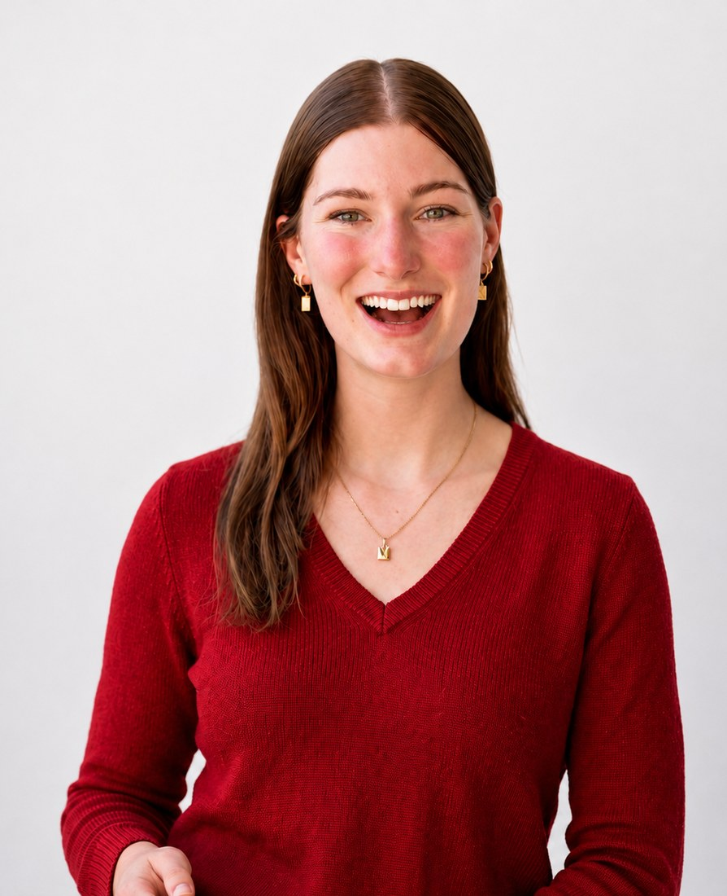

Jess Tresidder was named in InDaily's 40 Under 40 (South Australia, 2026), awarded the Inspiring Future Leaders Award by the SA Business Chamber, and was a finalist for The Advertiser and Sunday Mail SkyCity Woman of the Year in 2025. She has been featured by ABC, The Age, news.com.au, SA Life, and Business News Australia.
AI consulting & education for businesses and government
If AI feels like another thing on your to-do list... you're not alone. Many organisations know AI can save time, but aren't sure where to start or how to apply it practically. I help teams use & implement AI with confidence through strategy, hands on training, workshops and tailored systems, giving people back time for higher value work.
Named 40 Under 40, awarded the Inspiring Future Leaders Award and a Woman of the Year finalist. Featured in ABC, news.com.au, The Advertiser, SA Life.
Testimonials
What organisations are saying after working with me
“Hey Jess, dare I say, the best presentation I’ve ever had work wise. Thank you, I really appreciated your training, it was very helpful.” From an AI workshop attendee
★★★★★
From an AI workshop attendee
“Love your approach to AI, it’s refreshing. I’m feeling much more positive about AI and less overwhelmed. Whatever you charge, charge double. That was great.” From an organisation Jess Tresidder worked with on AI
★★★★★
From an organisation I worked with on AI
“Thanks for your time and training this morning on AI with the team. Super keen to see how my tasks can be done at a whole new level.” From an AI presentation client
★★★★★
From an AI presentation client

About me
“Where do I even start with AI?”
After starting my first business at 18 (featured in The Advertiser, ABC, News.com.au), that's exactly what I thought when someone told me to "learn AI."
Three years later, based in Adelaide, I've spent my professional career working with some of the fastest-growing B2B tech startups, through to training corporate teams to build their AI literacy and save themselves hours every week.
Most business owners I work with aren't anti-AI. They've tried ChatGPT a couple of times, got a weirdly formal email back, and quietly decided it wasn't for them. What most people don't realise is that a well-built AI workflow can draft content that genuinely sounds like your business, build prospect lists while you sleep, and become a personal assistant that deep-researches a client before your meeting and emails you the brief.
I close the gap between knowing AI could help and actually having it set up and working. Whether that's building the full go-to-market system for a startup, running a hands-on workshop with your team, or setting up automations that save you hours every week.
InDaily 40 Under 40, 2026Inspiring Future Leaders AwardWoman of the Year Finalist, 2025Startmate FellowEhrenberg-Bass ScholarNew Colombo Plan Scholar
"Everyone's talking about AI and automations and I'm still not sure what any of it actually means for my business."
"I bought an AI sales tool, used it for a week, then went back to LinkedIn and a spreadsheet."
"I know there's a better way to do half of what I do every day, I just don't have the time or patience to sit through a 47-minute YouTube tutorial to find out."
How I can help
Three ways to work together
For B2B startups
AI-powered growth systems
I build AI-powered go-to-market infrastructure that reduces the hours your team spends on research, prospecting, and manual outreach. That means AI-driven prospect research, automated list building and enrichment, personalised outreach sequences, CRM automations, and reporting, saving you and your team hours every week on the repetitive parts of sales so you can focus on closing.
Audit, build, or ongoing retainer
Learn it yourself
AI workshops and training
I run workshops with businesses and teams where you leave with AI tools that are set up and actually working for your business. You bring your laptop, tell me what's costing you time, and we build it together during the session. Every person who's come in nervous has left with an "oh, that was actually way easier than I thought" expression.
In-person & online · Individual training to corporate teams
I build AI automations around your specific workflows that save you and your team hours every week. An AI assistant that deep-researches every prospect before your meeting, emails you the brief, and auto-drafts follow-ups. Or growth systems that find leads, enrich them, conduct outreach, and improve on feedback automatically. Built around your real processes, tested with your data, and handed over. The system keeps running when I leave.
Most people try ChatGPT, get a weirdly formal email back, and move on. Here's what changes when the same task runs as a real workflow instead.
BeforeJust using AI as a chatbot
Write a follow-up to the lead I'm meeting tomorrow.
Dear Valued Client,I hope this email finds you well. I am writing to follow up regarding our recent discussion. Please do not hesitate to reach out at your earliest convenience.Warmest regards, [Your Name]
One generic reply. You still do everything else.
vs
AfterWhat AI workflows can do
Scans your calendar
Finds tomorrow's meeting and who it's with.
Researches the lead
Reads their company, role and recent news.
Sends you the brief
A one-page prep doc lands before the call.
Updates your CRM
Notes and action items, logged automatically.
One trigger. The whole thing runs itself.
FAQ
Questions I get asked
Is AI just ChatGPT?
AI has improved well beyond the chatbot. You can now build automated workflows that create graphic-designer-quality social content in your brand colours and fonts, schedule it for the week, send personalised follow-up sequences to leads without you touching them, generate a Monday morning brief with your priorities and client prep, and keep your CRM updated automatically. The chatbot is one small part of what's possible now, and honestly, it's the least interesting part.
Do I or my team need to be technical?
If you can send an email and use Google, you can do this. I'm not teaching anyone to code. The workshops are designed so you walk out with tools working on your laptop, and every person who's come in nervous has left with an "oh, that was actually way easier than I thought" expression. The implementation work is even simpler from your side, because I build it and hand it over ready to go.
What's the difference between the three services?
GTM engineering is for B2B startups who need a proper sales pipeline built with AI, from prospect research through to booked meetings. The workshop teaches you and your team how to build and use AI tools yourselves, and you leave the session with everything set up. The implementation is for businesses that would rather I just build the automation and hand it over ready to go. Same quality of outcome, different paths depending on whether you want to learn the how or just want the result.
Who is this for?
My AI training and implementation are for businesses, owners, or leaders who want to train themselves or their team on AI, or have it built and implemented for them. That might be a 5-person agency, a regional services business, or a corporate team that knows AI could save them hours but hasn't worked out the how. My GTM engineering is for B2B founders and early-stage startups who want their go-to-market pipeline built with AI.
Can you run workshops outside Adelaide?
In-person across South Australia and online for anyone in Australia. If you've got a team and you'd rather I come to your office, we can sort that out too.
What is a GTM engineer?
GTM stands for go-to-market. A GTM engineer builds the systems that handle the repetitive parts of sales, marketing and operations (prospect research, list building, outreach and CRM updates) so founders and salespeople get their time back for the conversations that actually need a human. It's most of what I do for B2B startups: building the go-to-market pipeline with AI so the team's hours go into selling, not admin. Humans stay the key part, always.
Do you work with businesses in Adelaide?
Yes. I'm based in South Australia and run AI workshops and consulting in person across Adelaide and the wider state, and online for anyone in Australia. Whether it's a workshop with your team, a go-to-market system for a startup, or automations built around your workflows, I'm happy to come to your office or run it online.
Get in touch
Whether you want to build AI growth systems, implement AI in your business, or upskill your team
Please don't hesitate to reach out. Tell me a bit about what you're working on and what's been taking up too much of your week. I'll get back to you within a day.